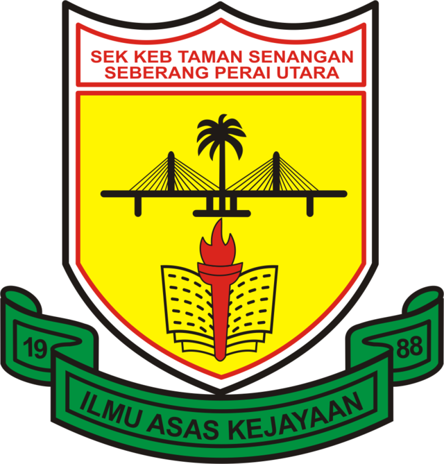
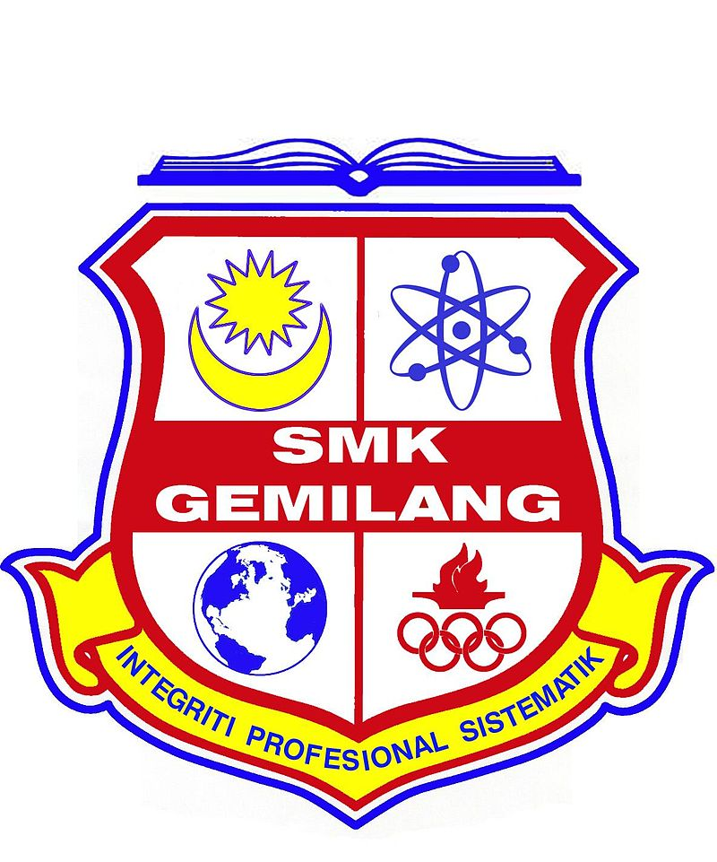

EDUCATION
Primary School
2011-2016
In 2011, I enrolled in a primary school called Sekolah Kebangsaan Taman Senangan.

Achievements:
- Participated a Hafazan competition in 2014 .
- Participated in an entrepreneurship program in 2016.
- Obtained 2 A's in UPSR.
Secondary School
2017-2022
In 2017, I enrolled in a school called Sekolah Menengah Kebangsaan Gemilang.

Achievements:
- Participated in an drawing competition school level in 2017.
- Participated & obtained 72% marks in “Kuiz Online Perniagaan Peringkat Daerah Seberang Perai”.
- Obtained 4 A's in SPM.
University
2022-Ongoing
In 2022, I enrolled in a university called Universiti Teknologi MARA in Kedah.

Achievements:
- Participated in “MASMED YOUNG ENTREPENEUR” program during semester 4 in UiTM.